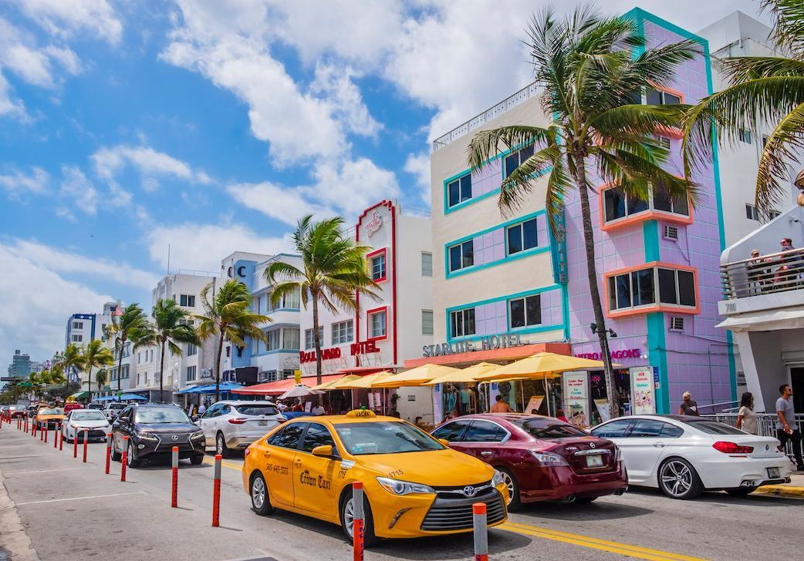

Une scène artistique et culturelle florissante
Miami est bien plus qu'une destination de plage; c'est aussi une ville qui regorge d'art et de créativité.
Le quartier de Wynwood est un musée à ciel ouvert, avec des fresques murales colorées et audacieuses qui transforment
chaque coin de rue en œuvre d'art. Pour les amateurs d'art contemporain, le Perez Art Museum Miami propose des
expositions impressionnantes dans un cadre magnifique, en bord de mer.